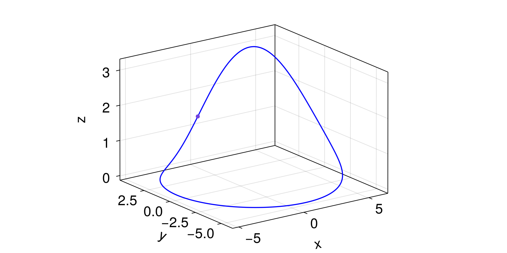

Algorithms
Optimized Shooting Method
PeriodicOrbits.OptimizedShooting — TypeOptimizedShooting(; kwargs...)A shooting method (Dednam and Botha, 2014) combined with Levenberg-Marquardt optimization to find periodic orbits of continuous systems.
Keyword arguments
Δt::Float64=1e-6: explicit ODE solver time step. This should correspond to the time step used in the ODE solver specified in theCoupledODEsobject.p::Int64=2:p*dimension(ds)is the number of points in the residualR.optim_kwargs::NamedTuple=(x_tol=1e-10,): keyword arguments to pass to the optimizer. The optimizer used is theoptimizefromLeastSquaresOptim.jl. For details on the keywords see the respective package documentation.abstol::Float64=1e-3: absolute tolerance for sum of squaresssrof the residualR. The method converged ifssr <= abstol.
Description
Continuous dynamical system
\[\frac{dx}{dt} = f(x, p, t)\]
can be rewritten in terms of the dimensionless time $\tau = t/T$ as
\[\frac{dx}{dt} = Tf(x, p, T\tau)\]
where $T$ is a period of some periodic orbit. The boundary conditions for the periodic orbit now are $x(\tau = 0) = x(\tau = 1)$. Dednam and Botha (Dednam and Botha, 2014) suggest minimizing the residual $R$ defined as
\[R = (x(1)-x(0), x(1+\Delta \tau)-x(\Delta \tau), ..., x(1+(p-1)\Delta \tau)-x((p-1)\Delta \tau))\]
with respect to $x(0)$ and $T$ using Levenberg-Marquardt optimization.
In our implementation keyword argument p corresponds to $p$ in the residual $R$. The keyword argument Δt corresponds to $\Delta \tau$ in the residual $R$.
Important note
For now we recommed using the RKO65 ODE solver and setting the stepsize dt the same as Δt. For example
alg = OptimizedShooting(Δt=1/(2^6), p=3)
ds = CoupledODEs(dynamic_rule, state, params; diffeq = (alg=RKO65(), dt=alg.Δt))Using other ODE solvers may lead to divergence.
Example
using PeriodicOrbits
using CairoMakie
using OrdinaryDiffEq
@inbounds function roessler_rule(u, p, t)
du1 = -u[2]-u[3]
du2 = u[1] + p[1]*u[2]
du3 = p[2] + u[3]*(u[1] - p[3])
return SVector{3}(du1, du2, du3)
end
function plot_result(res, ds; azimuth = 1.3 * pi, elevation = 0.3 * pi)
traj, t = trajectory(ds, res.T, res.points[1]; Dt = 0.01)
fig = Figure()
ax = Axis3(fig[1,1], azimuth = azimuth, elevation=elevation)
lines!(ax, traj[:, 1], traj[:, 2], traj[:, 3], color = :blue, linewidth=1.7)
scatter!(ax, res.points[1])
return fig
end
a = 0.15; b=0.2; c=3.5
ig = InitialGuess(SVector(2.0, 5.0, 10.0), 10.2)
alg = OptimizedShooting(Δt=1/(2^6), p=3)
ds = CoupledODEs(roessler_rule, [1.0, -2.0, 0.1], [a, b, c]; diffeq = (alg=RKO65(), abstol = 1e-14, reltol = 1e-14, dt=alg.Δt))
res = periodic_orbit(ds, alg, ig)
plot_result(res, ds; azimuth = 1.3pi, elevation=0.1pi)